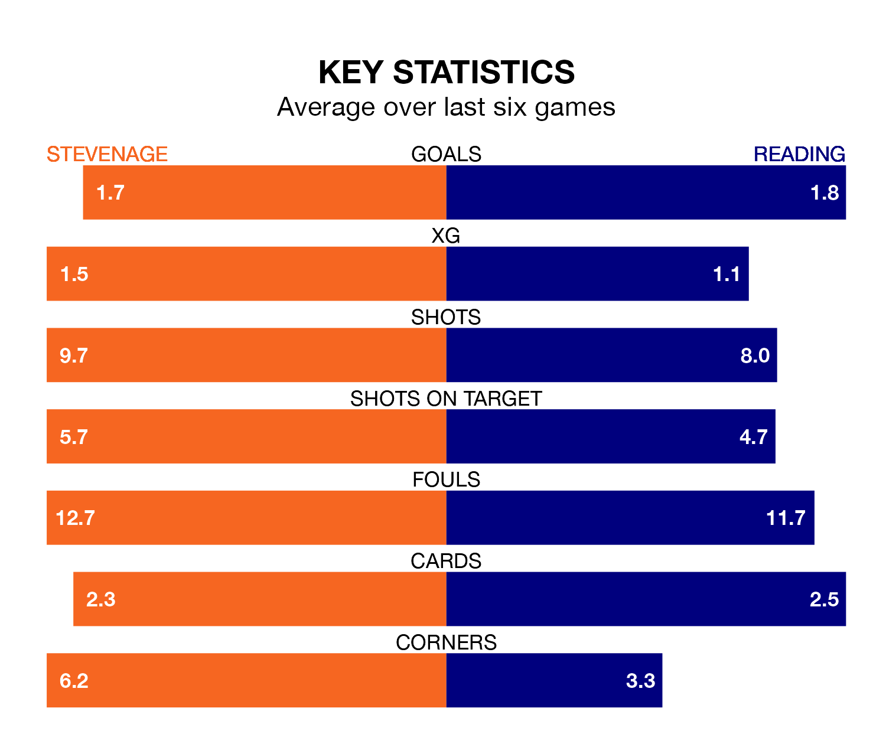

Reading face Stevenage on Saturday seeking to protect their long unbeaten run in EFL League One.
The Royals are unbeaten in six, with two wins and four draws, ahead of the 3pm kick-off.
They face a Stevenage team who have won two and drawn two over the same number of games.
With 37 goals in 25 games so far this season, Stevenage are scoring more than average in the league with 1.5 goals per game. And they are conceding fewer than average, letting in 25 goals at a rate of 1.0 per game.
Reading are also above average scorers, with 1.4 goals per game, compared to a league average of 1.3. They have conceded 1.6 goals per game.
In Jamie Reid, the Boro have one of the league's most on-form strikers so far this season. He has notched 14 goals in 24 appearances, to sit third in the scoring charts.
The Royals' top scorers, with six goals each, are Sam Smith and Harvey Knibbs.
The hosts are seventh in the table after 25 games, of which they have won 12 and drawn seven, earning 43 points.
The away side are 11 places behind Stevenage in 18th, with seven wins and six draws putting them on 27 points.
Over the last two years, Stevenage and Reading have played each other twice. They won one each.
Their last meeting was on August 19, when Reading won 2-0 at home.
Stevenage's last match was on Monday, a 2-1 loss against Portsmouth, with Louis Thompson getting the goal for the Boro.
Reading beat Exeter City 3-2 last time out, also on Monday, with Alex Hartridge (own goal), Femi Azeez and Knibbs on the scoresheet.
Updated: 12:57, 02/01/24